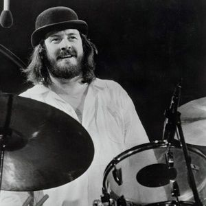

História da Banda
Led Zeppelin foi uma banda britânica de rock formada em Londres, em 1968. Consistia no guitarrista Jimmy Page, no vocalista Robert Plant, no baixista e tecladista John Paul Jones e no baterista John Bonham. Seu som pesado e violento de guitarra, enraizado no blues e música psicodélica de seus dois primeiros álbuns, é frequentemente reconhecido como um dos fundadores do heavy metal. Seu estilo foi inspirado em uma grande variedade de influências, incluindo a música folk, psicodélica e o blues.
Depois de mudar seu antigo nome de New Yardbirds, o Led Zeppelin assinou um contrato favorável com a Atlantic Records, que lhes ofereceu uma considerável liberdade artística. O grupo não gostava de lançar suas canções como singles, pois viam os seus álbuns como indivisíveis e completas experiências de escuta. Embora inicialmente impopular com os críticos, o grupo conseguiu um impacto comercial significativo nas vendas com Led Zeppelin (1969), Led Zeppelin II (1969), Led Zeppelin III (1970), o quarto álbum sem título (1971), Houses of the Holy (1973), e Physical Graffiti (1975). O quarto álbum, com a música "Stairway to Heaven", está entre as obras mais populares e influentes do rock e ajudou a consolidar a popularidade do grupo.
Álbuns posteriores da banda visaram uma experimentação maior e foram acompanhados por extensos recordes e concertos que renderam à banda uma reputação pelos seus excessos e sua devassidão. Apesar de terem permanecido bem-sucedidos comercial e criticamente, a sua produção e agenda de shows foram limitadas no final da década de 1970, e o grupo se desfez após a morte repentina de Bonzo (apelido de John Bonham), em 1980. Desde então, os membros remanescentes esporadicamente colaboraram e participaram em raras reuniões juntos. A mais bem-sucedida delas foi em 2007 no Ahmet Ertegun Tribute Concert, em Londres, com Jason Bonham no lugar de seu pai.
Led Zeppelin é amplamente considerado como um dos grupos de rock mais bem sucedidos, inovadores e influentes da história, sendo até hoje um dos artistas mais vendidos de todos os tempos. É uma das bandas que mais vendeu discos na história da música, com várias fontes estimando recordes de vendas do grupo entre 200 a 300 milhões de unidades em todo o mundo. Com 111,5 milhões de unidades certificadas pela Associação da Indústria de Gravação da América, é a segunda banda de maior recorde de vendas de discos nos Estados Unidos. Cada um de seus nove álbuns de estúdio apareceram no Billboard Top 10 e, seis deles, atingiram a primeira posição. O músico Dave Grohl os descreveu como "a maior banda de rock and roll de todos os tempos", "a maior banda dos anos 70" e a revista Rolling Stone como o 14º maior artista da música. É uma das bandas mais contrabandeadas da história da música, com diversas gravações ilegais notáveis que indiretamente fizeram parte de sua discografia. Foram introduzidos no Rock and Roll Hall of Fame em 1995. Sua biografia no museu cita que a banda era "tão influente" na década de 1970 quanto os Beatles foram na década anterior.
Um resumo sobre cada um dos membros
Robert Plant
Robert Anthony Plant, (West Bromwich, 20 de agosto de 1948) é um músico, cantor, e compositor britânico mais conhecido por seu trabalho como vocalista da banda de rock Led Zeppelin.Plant desfrutou de grande sucesso com o Led Zeppelin do final da década de 1960 até o final da década de 1970 e desenvolveu uma imagem atraente como o carismático vocalista de rock and roll, semelhante a contemporâneos como Roger Daltrey do The Who, Freddie Mercury da Queen, Mick Jagger dos Rolling Stones e Jim Morrison do The Doors. Com seus longos cabelos loiros (que lhe conferiu posteriormente o apelido entre os fãs de Golden God) e aparência poderosa e de peito nu durante as apresentações, Plant ajudou a criar o arquétipo "deus do rock and roll" ou "deus do rock".
John Paul Jones
John Paul Jones, nome artístico de John Baldwin (Sidcup, 3 de janeiro de 1946), é um multi-instrumentista, baixista e tecladista britânico. Jones ganhou notoriedade por ser o baixista, tecladista e um dos membros do Led Zeppelin até o desmembramento da banda após a morte de John Bonham, em 1980. Desde então, Jones vem desenvolvendo uma carreira solo. Também toca guitarra, bandolim, koto, gaita e ukulele.
Jimmy Page
James Patrick Page (Heston, 9 de janeiro de 1944) é um músico, produtor musical e compositor britânico que alcançou sucesso internacional como guitarrista da banda de rock Led Zeppelin. Começou sua carreira como músico de estúdio em Londres e, em meados da década de 1960, tornou-se o guitarrista de sessão mais procurado na Inglaterra. Foi membro dos Yardbirds de 1966 até 1968, e posteriormente fundou o Led Zeppelin, em 1968. Page é amplamente considerado como um dos maiores e mais influentes guitarristas de todos os tempos. A revista Rolling Stone descreveu-o como o "pontífice do poder dos riffs", sendo escolhido em enquete em terceiro lugar na lista dos "100 Maiores Guitarristas de Todos os Tempos".
John Bonham (Bonzo)
John Henry Bonham (Redditch, 31 de maio de 1948 – Clewer, 25 de setembro de 1980) foi um músico e compositor inglês, mais conhecido por ter sido o baterista da banda Led Zeppelin. Bonham era admirado por sua velocidade, potência, sons característicos, e sensibilidade para o groove. É amplamente considerado um dos melhores bateristas da história do rock. Em 2011 os leitores da Rolling Stone consideraram Bonham o "melhor baterista de todos os tempos".
Por hoje é só, espero que tenha gostado desse breve resumo de uma das bandas mais influentes da história da música.